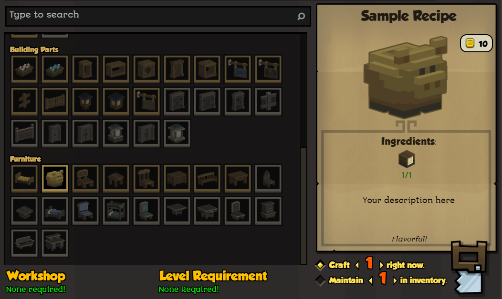

First steps with modding
We have several starter mods available to get started with modding Stonehearth. It is recommended to start making small mods (or modifying existing ones), to get used to the structure and modding API, and then try more complex modding if you want to venture with Lua files.
After reading the essentials guide you should be able to create your own mod from scratch, but let's start by modifying existing mods to get used to the files. We're going to use a sample mod called startermod_basic, whose manifest is way less overwhelming than the stonehearth mod's one:
- Download the startermod_basic mod from Github.
- Unzip it to your stonehearth mods directory, as a peer to stonehearth.smod and radiant.smod.
 Some compression software might create an inner subfolder with the same name. Make sure that after unzipping the mod, the directory from the mods folder looks like mods/startermod_basic/< files of the mod > and not like mods/startermod_basic/startermod_basic/< files of the mod >.
Some compression software might create an inner subfolder with the same name. Make sure that after unzipping the mod, the directory from the mods folder looks like mods/startermod_basic/< files of the mod > and not like mods/startermod_basic/startermod_basic/< files of the mod >. - Inside the startermod_basic folder, you should see several folders and some files, one of them called manifest.json.
- Start the game. In the Main Menu, click on the Mods button. You should see the startermod_basic mod listed in the Unmanaged Mods list and enabled. While we're here, enable the debugtools mod if it isn't.
The mod adds two new objects to the world, and a new recipe to the carpenter, so that you can see at least one of the objects in the world.
Before digging into the mod's files, start a new game and make a carpenter. You should see a "Sample Recipe" in his recipe list under the "furniture" category. The Sample Recipe creates a decorative object that you can place in the world. 
startermod_basic also adds a "Sample Object" to the world. This object is so basic that it has almost no use in the game. In order to even see it (as it does not participate in any recipes), you must open the item stamper debug tool, and type:
startermod_basic:sample_object
Press enter and then click somewhere on the ground of the game:

Now that you've seen what the startermod_basic adds to the game, you are now ready to use this mod to add your own objects to Stonehearth.
The simplest way is to replace the sample object's model file (startermod_basic/entities/sample_object/sample.qb) with your own model. (To create a stonehearth model, you want a voxel editing program that can save things in the .qb file format. Go to the tools or the art sections of the guide to find out how).
Once you've named your new model sample.qb and copied it into the folder by overwriting the existing sample.qb file, restart Stonehearth and use the item stamper to see your model inside the game.
If you do this model replacement with the decorative object that the carpenter makes, he will craft your decorative object, instead of the default one.
You can add additional objects to the mod by copying the example of sample_object and the decorative object and modifying the files. Try these exercises:
- Create a brand new object in the startermod_basic mod, and use the debugtools item stamper to put both it and the sample_object down into the world.
- Give your carpenter an additional recipe, that will enable him to create your object.
If you have read the essentials guide you should be able to figure out those exercises by now. This mod is small so you won't be overwhelmed due to too many files. Just in case, we'll be covering how to create items and recipes in future sections of the modding guide.